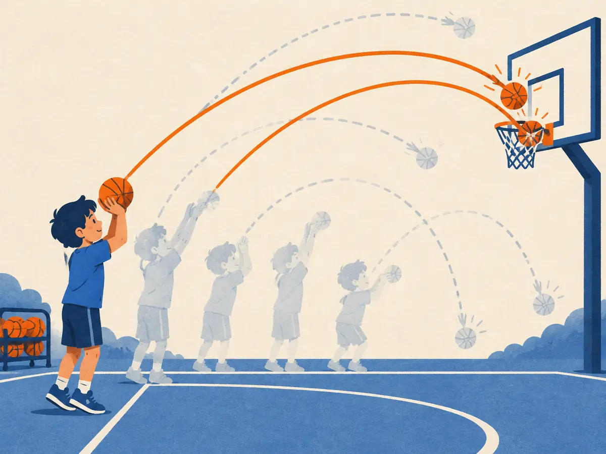

Policy gradients & REINFORCE
Q-learning learns values and acts greedily on them. Policy-gradient methods skip the middleman: they adjust the policy's own parameters by gradient ascent on expected reward. The simplest version, REINFORCE, fits in one line, and it is the ancestor of the algorithms that post-train LLMs today.
By the end you can
- Write the objective $J(\theta)$ and derive its gradient with the log-derivative trick.
- Compute a REINFORCE update by hand for a softmax policy.
- Explain why REINFORCE is noisy, why a baseline helps, and how it all applies to an LLM's tokens.
Take your best guess. A wrong guess now makes the right answer stick later.
A model sampled an answer and got a high reward. Without knowing why it was good, what is a sensible update?
- Copy the reward into the model's weights
- Make that sampled answer more likely, in proportion to how good the reward was
- Make every possible answer more likely
- Do nothing until you know the true best answer
An LLM writes a 3-token answer with token probabilities 0.5, 0.4 and 0.1. What is the probability of the whole answer?
- 1.0
- 0.1, the smallest one
- 0.02
- 0.33, the average
Why learn the policy directly?
Value-based methods like Q-learning (RL.3) pick actions with $\arg\max_a Q(s,a)$. That gets awkward fast. With continuous actions (a robot joint's torque) there's no finite list to max over. With a huge discrete action set, like an LLM's 100k-token vocabulary at every step, learning a separate Q-value for each is wasteful. And sometimes the best behaviour is deliberately random (think rock-paper-scissors), which an argmax can't express.
So in 1992 Ronald Williams proposed something more direct in Simple statistical gradient-following algorithms for connectionist reinforcement learning: give the policy its own parameters $\theta$, so $\pi_\theta(a \mid s)$ is a neural network that outputs action probabilities, and adjust $\theta$ to increase expected return. He called the family REINFORCE.
The quantity to maximize is the objective, the expected return of trajectories $\tau = (s_0, a_0, r_1, s_1, a_1, \dots)$ produced by running the policy:
$$J(\theta) = \mathbb{E}_{\tau \sim \pi_\theta}\big[\,G(\tau)\,\big]$$$G(\tau)$ is the trajectory's total (discounted) return. We want $\nabla_\theta J$ so we can do gradient ascent, $\theta \leftarrow \theta + \alpha \nabla_\theta J$: the same rule as gradient descent (P2.2) with the sign flipped, because we're climbing reward rather than descending a loss.
The catch: $\theta$ affects $J$ only through which trajectories get sampled, and sampling isn't differentiable. Nor is the environment: we can't backpropagate through a game engine or a reward model's judgement of a whole essay.
Why can't we just backpropagate the reward through the environment to get $\nabla_\theta J$?
- Rewards are always zero
- Neural networks can't output probabilities
- Gradient ascent only works for losses
- The parameters affect the reward only through sampled actions and the environment's response, neither of which we can differentiate
The log-derivative trick and the policy gradient
Write the expectation as a sum over trajectories, $J = \sum_\tau p_\theta(\tau)\,G(\tau)$, and use one identity from calculus, $\nabla p = p\,\nabla \log p$ (because $\nabla \log p = \nabla p / p$):
$$\nabla_\theta J = \sum_\tau \nabla_\theta p_\theta(\tau)\, G(\tau) = \sum_\tau p_\theta(\tau)\, \nabla_\theta \log p_\theta(\tau)\, G(\tau) = \mathbb{E}_{\tau \sim \pi_\theta}\big[\, G(\tau)\, \nabla_\theta \log p_\theta(\tau) \,\big]$$An expectation is something we can estimate by sampling: run the policy, compute $G\,\nabla \log p$, average. Now look inside $\log p_\theta(\tau)$. A trajectory's probability is a product of the policy's choices and the environment's responses, so its log is a sum:
$$\log p_\theta(\tau) = \log p(s_0) + \sum_t \Big[\log \pi_\theta(a_t \mid s_t) + \log P(s_{t+1} \mid s_t, a_t)\Big]$$The environment terms don't depend on $\theta$, so their gradient is zero. We never need a model of the environment. Only the policy's own log-probabilities remain. Using the fact that an action can't affect rewards that came before it, each action is credited only with the return from then on, $G_t$. That gives the REINFORCE estimator:
$$\nabla_\theta J \approx \sum_{t} \nabla_\theta \log \pi_\theta(a_t \mid s_t)\; G_t$$$\nabla_\theta \log \pi_\theta(a_t \mid s_t)$, the score function, is the direction in parameter space that makes action $a_t$ more likely; $G_t$ says how much to go that way, and in which direction. The general form, with the true $Q^\pi(s_t,a_t)$ in place of the sampled $G_t$, is the policy gradient theorem (Sutton, McAllester, Singh & Mansour, 1999).
In the derivation, why do the environment's transition probabilities $P(s_{t+1} \mid s_t, a_t)$ drop out?
- They don't depend on $\theta$, so their log has zero gradient
- They are always equal to 1
- REINFORCE assumes a deterministic environment
- They cancel against the rewards
REINFORCE by hand
Take the simplest possible policy: one state (a prompt) and three actions (answer tokens), with a softmax over logits, $\pi_\theta(a) = e^{\theta_a} / \sum_b e^{\theta_b}$. For a softmax, the score function has a neat closed form:
$$\frac{\partial \log \pi_\theta(a)}{\partial \theta_b} = \mathbb{1}[b = a] - \pi_\theta(b)$$In words: the sampled action's logit goes up by $1 - \pi(a)$, every other logit goes down by its own probability. (It's the same gradient as cross-entropy in P3.2, with the opposite sign.)
Worked example
Logits $\theta = (0, 0, 0)$ for (Paris, Lyon, Nice), so $\pi = (1/3, 1/3, 1/3)$. Learning rate $\alpha = 0.5$.
- Sample Paris; the verifier gives $G = +1$.
- Score function: $(1 - \tfrac13,\ -\tfrac13,\ -\tfrac13) = (+0.667, -0.333, -0.333)$.
- Update: $\theta \leftarrow \theta + 0.5 \times 1 \times (+0.667, -0.333, -0.333) = (0.333, -0.167, -0.167)$.
- New probabilities: $\pi = (0.452, 0.274, 0.274)$. Paris went from 0.33 to 0.45.
From $\theta = (0.333, -0.167, -0.167)$, $\pi = (0.452, 0.274, 0.274)$, the policy now samples Lyon and gets $G = -1$. $\alpha = 0.5$.
- Score-function component for Lyon's own logit, $1 - \pi(\text{Lyon})$:
- Change to Lyon's logit, $\alpha \times G \times$ that:
- Change to Paris's logit, $\alpha \times G \times (0 - \pi(\text{Paris}))$:
- Lyon's new logit:
After the update $\pi = (0.529, 0.178, 0.293)$: a bad sample pushes its own probability down and spreads it over the alternatives.
Explain like I'm 5

A child is practising free throws. Every throw is a little different: higher, softer, a bit to the left. Nobody tells them the perfect technique.
After each throw they just notice: in or out? The styles that went in get a bit bolder in their memory, so they use them more. The ones that missed fade away.
Throw after throw, the good style becomes the habit. The habit is the policy; making successful styles bolder is the policy gradient.
Where it breaks: the child can see why a throw missed. REINFORCE can't: it only gets one score for the whole attempt and must find out by trial, over many attempts, which parts mattered.
A softmax policy has $\pi = (0.7, 0.2, 0.1)$. It samples action 1 (probability 0.7). What is the score-function component for action 3's logit?
- $+0.9$
- $-0.1$
- $+0.3$
- $0$
High variance, and the baseline fix
REINFORCE is unbiased: on average its estimate points exactly along $\nabla J$. But a single estimate can be wildly off. It multiplies the score function by a return that sums many random rewards, and it credits every action in an episode with the same outcome, including the bad moves in a game that happened to be won. Learning needs many samples and small steps.
A second problem shows up when all rewards are positive, say rewards between 0.6 and 1.0. Then every sampled action gets pushed up; only the sizes differ, and the useful signal ("this one was better than that one") is buried in noise.
The fix is a baseline $b(s)$ subtracted from the return:
$$\nabla_\theta J \approx \sum_t \nabla_\theta \log \pi_\theta(a_t \mid s_t)\,\big(G_t - b(s_t)\big)$$It doesn't bias the gradient, because the score function averages to zero: $\mathbb{E}_{a \sim \pi}[\nabla \log \pi(a)] = \sum_a \pi(a)\,\frac{\nabla \pi(a)}{\pi(a)} = \nabla \sum_a \pi(a) = \nabla 1 = 0$. So subtracting any $b$ that doesn't depend on the action changes nothing on average, but a good choice shrinks the variance a lot. With rewards 1.0 and 0.6 and baseline $b = 0.8$, the updates become $+0.2$ and $-0.2$: one answer goes up, the other goes down.
The best simple baseline is the state's value, $b(s) = V(s)$, which turns $G_t - b$ into "how much better than usual did this go?". That quantity is the advantage, and learning $V$ alongside the policy is the next lesson's actor-critic. The notebook measures the variance drop directly.
Why doesn't subtracting a baseline $b(s)$ bias the policy gradient?
- Because $b$ is always zero on average
- Because the baseline is learned with a separate optimizer
- Because $\mathbb{E}_{a \sim \pi}[\nabla \log \pi(a \mid s)] = 0$, so $b(s)$ times it also averages to zero
- It does bias it, but only slightly
From actions to tokens
Everything above transfers to a language model with almost no change. The policy $\pi_\theta$ is the LLM. The "action" is a whole response $y = (y_1, \dots, y_T)$ to a prompt $x$, generated token by token, so its log-probability is a sum of token log-probs:
$$\log \pi_\theta(y \mid x) = \sum_{t=1}^{T} \log \pi_\theta(y_t \mid x, y_{<t}) \quad\Rightarrow\quad \nabla_\theta \log \pi_\theta(y \mid x) = \sum_{t=1}^{T} \nabla_\theta \log \pi_\theta(y_t \mid x, y_{<t})$$With a single reward $R(x,y)$ at the end (from a reward model or a verifier), REINFORCE says: sample responses, and nudge up every token of each response in proportion to $R - b$. In code this is just a weighted next-token loss, $-(R - b)\sum_t \log \pi_\theta(y_t \mid \dots)$, the same log-probs you computed in pretraining, now weighted by how good the whole response was.
REINFORCE-style methods are genuinely used for LLMs. RLOO ("REINFORCE leave-one-out"; Ahmadian et al., 2024) samples several responses per prompt and uses the mean reward of the others as each one's baseline. GRPO (M3.5) uses the group mean too, normalized by the group's standard deviation, inside a PPO-style clipped update. PPO itself (next lesson and M3.3) adds a learned value baseline and limits how far each update may move.
An LLM response has token log-probs $-0.5, -1.0, -0.3$ and gets advantage $R - b = +2$. Which tokens does REINFORCE push up?
- All three, each by the gradient of its own log-prob scaled by the same $+2$
- Only the least likely token
- Only the last token, which earned the reward
- None, because the log-probs are negative
Explain the REINFORCE update in plain words, and why a baseline helps.
Which expression is the REINFORCE estimate of the policy gradient?
- $\sum_t \nabla_\theta Q(s_t, a_t)$
- $\sum_t \nabla_\theta \log \pi_\theta(a_t \mid s_t)\, G_t$
- $\sum_t \nabla_\theta G_t$
- $\nabla_\theta \max_a \pi_\theta(a \mid s)$
Connect to P2.2: in code, frameworks minimize losses. What loss gives the REINFORCE update?
- $+\,G \sum_t \log \pi_\theta(a_t \mid s_t)$
- $(G - \pi_\theta)^2$
- The cross-entropy between $\pi_\theta$ and the uniform distribution
- $-\,G \sum_t \log \pi_\theta(a_t \mid s_t)$, with $G$ treated as a constant
All rewards in a batch are between 5 and 6. Without a baseline, what happens to the probability of each sampled response?
- The worst ones are pushed down
- Nothing changes
- All are pushed up, just by slightly different amounts, so learning is slow and noisy
- Only the best one moves
Connect to RL.3: what is a key advantage of policy gradients over Q-learning for an LLM?
- They adjust the token probabilities directly, with no argmax over a 100k-token vocabulary and no Q-value per token to learn
- They need no samples
- They never have high variance
- They require a model of the environment
Key takeaways
- Policy gradients maximize $J(\theta) = \mathbb{E}_{\tau \sim \pi_\theta}[G(\tau)]$ by gradient ascent on the policy's own parameters.
- The log-derivative trick gives $\nabla J = \mathbb{E}[G\,\nabla \log p_\theta(\tau)]$; environment terms drop out, so no model is needed.
- REINFORCE (Williams, 1992): $\nabla J \approx \sum_t \nabla \log \pi_\theta(a_t \mid s_t)\,G_t$. For a softmax, the score is one-hot minus the probabilities.
- It's unbiased but high-variance; a baseline $b(s)$ cuts variance without adding bias.
- For LLMs, a response's log-prob is the sum of token log-probs, so every token is pushed by the response's advantage.
Implement a softmax policy and its score function in NumPy, train it with REINFORCE on a bandit with and without a baseline, measure how much the baseline shrinks the gradient's variance, and train a tiny 3-token "LLM" with sequence-level rewards. About 20 minutes.
Adding cards schedules your first spaced review.